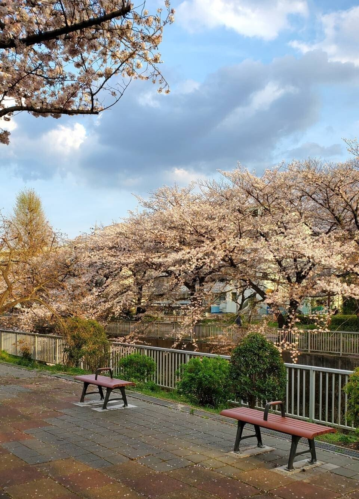

東京の郊外である、この街に住み始めて2年半が過ぎた。
近所を流れる川沿いの桜は春を迎えるたび、鮮やかなピンクの花を咲かせている。
出会いと別れを一緒に経験する春というのは不思議な季節だ。
思えば、2020年の年明け早々、僕は初めて東京を離れて岐阜に住み始めた。
せっかく新卒で入った、自分には似つかわしくない大企業を辞め、先々の未来なんて考えずに、とにかく東京から姿を消したい。あの時はそう思っていた。
仕事や人間関係でうまくいかず、何度も壁にぶつかっては他人のせいにした。兄弟がおらず、人と争うことに慣れていない温室な環境で育った僕には、社会人として生きる毎日は目隠しをして雑多な繁華街を歩くようなものだった。資本主義社会に迎合しきれぬまま、誰かと肩がぶつかり、謝りながら頭を下げ、行き先も分からずとにかく歩いていた。しかし、歩けど歩けどゴールなんて見えず、この先どうしたらいいか分からなくなっていた。
入社当時は最年長ということもあり同期のリーダーのように扱われていたけれど、心身を壊して休職、数か月後に復職したら、もうかつての僕はそこにいなかった。今思えば周囲の反応は当たり前のものだった。もし僕がそんな人を見たら、悪意などなくても同じことをしていたと思う。それでも、当の本人は会社にいるだけで涙が溢れ、その空間に存在するだけでも辛いと感じてしまう。そんな状態だった。
あの頃は生きてきた中で一番自暴自棄になっていた時期だった。死について、本気で考えてもいた。
しかし、それは視野が狭く、ほかの世界を知らないがゆえの考え方だった。それに、あの頃も今も温かい人は周りにいた。人はネガティブな出来事の方が記憶に残りやすいけれど、ありがたいことに僕を見守ってくれる人は確かにいたのだ。
それでも、人生をやり直したかった。
そして、どうせやり直すのなら、自分の好きな文学や小説に関わる仕事がいいなと思っていた。
大学時代に図書館でアルバイトをしていたこともあり、僕は名古屋にある書店の求人に応募し採用された。初めての土地で書店員として働く傍ら、毎日小説を書き進めた。あの頃はとにかく長編小説を書いて、プロの作家になろうと思っていた。
今では無茶な夢を掲げていたなあと思えるが、当時はどうにかして自分の人生のハンドルを握ろうと必死だった。そして、心のどこかで人生の逆転を信じていた。それは、誰にも救えない僕の心の叫びを全部受け入れてくれる｢文章を書く｣ということに根拠のない絶対的な自信があったからだった。
でも、それだけでは長編小説は完成しなかった。するわけがなかった。僕の割にはプロットも作り、章立てし本気で完成を目指していたけれど、途中で全く進まなくなった。
その時、自分は果たして何ができるのかを改めて考えた。何事も世に出るほどの才能はそう簡単には育たないし時間がかかる。もう少し根気があれば、まだ頑張って書こうとしたのかもしれない。でも、その時はポキッと心が折れてしまった。情けなくて恥ずかしい。あんなに大口を叩いて出て行った東京に、また戻ることになる。合わせる顔なんてなかった。
結局、岐阜に行ってから1年も経たずして東京に戻り、IT系の会社に再就職した。
あれ以来、作家になるという夢は、とうに自分の手のひらからこぼれ落ちていた。
正直に吐露したいことがある。
僕は今まで本当の自分を隠して創作活動をしていた。創作物には直接関係のないことかもしれないけれど、エッセイを書く機会が増えていくうちに当たり障りのないことやテイのいい人物像を盛り込んでいた。
それは、これまで語ってきたような恥ずかしい過去があったからかもしれない。
思えば不登校だった中学時代、唯一外出する理由になっていた個人塾の先生に言われ、14歳から日記を書き始めた。あの頃は自分を隠すなんてこともできず、不細工な字でぶっきらぼうに毎日を綴っていた。
子どもの頃はスポーツや音楽など色々と習い事をさせてもらったけど、渋々始めた日記で、まさか書くということが人生の中で最も熱中できて、得意で、好きなことになるとは思わなかった。
やっぱり文章を書くのはこの世界で一番楽しい。誰かに指示されたり誰かを装うことなんかせず、真っ正直に誰かへ何かを伝えようと書く時が一番。そう、今も間違いなくその瞬間だ。
それから自然なうちに短編小説のようなものを書き始めた。
創作活動においては今まで色々なWebサイトで活動させてもらったが、印象に残っているのは、ここnoteはもちろん、創作物をプロ顔負けの声優さんに朗読してもらえるWritoneだった。自分の書いた文章が鮮やかな声で形作られ全く異なる色を放つ。それを作者としてリアルタイムに体験できた。あんなに幸せな時間はなかった。
少し前にそのWebサイト自体が消滅してしまい、その時は人知れず寂しかったけど、あのかけがえのない時間は僕の人生において間違いなく財産になっている。
そこで出会ったメンバーとnoteで共同マガジンをやって初めて文筆で収益を上げたり、公募されていた短編小説の企画で一部の作品群が書籍として出版された際には拙作2作を掲載してもらったことも生涯の宝物だ。実際に図書館にも並べられ、見知らぬ誰かが借りて読んでくれていることを聞いた時は、言葉にならない嬉しさが込み上げた。
生きていればいいことがある。そして、それはいつも誰かがもたらしてくれた縁だ。
一度は生きる気力を見失い未だに人と接するのが苦手な僕でも、家族やそばにいてくれる数少ない友人たちに支えられ、今日まで生きてこられた。
それに、フォロワーやいいねの数が全てだなんて思わないし、ましてはそんなSNS信者のように思われたくはないけれど、誰にも心を開いていなかった少年が書き続けていたら、数年後に図書館でも貸出されているような書籍に載り、noteでは1,300人以上のフォロワーのタイムラインに流れる場所までやってこれた。もうこれは奇跡であり、自分だけでは到底、到達不可能な現在地だ。
落ちこぼれ、ドロップアウト気味な人生にささやかな幸せをもたらしてくれたのは、気持ちを包み隠さず書いたノートが始まりだった。
ノートに気持ちなんて書いたところで、日々対峙している課題をただちに解決してくれるわけではない。でも、書かずにはいられないのはなぜだろう。それに、決して大金なんて持ってきてはくれないけれど、経済的豊かさとは対極にあるような精神的支柱。つまるところ、僕の生きる糧こそ、書くことなのだと思う。
そのことを社会人になった当初は忘れてしまっていた。
でも、誰も知らない土地で独り自分と向き合う時間があったから、今の自分がいるのだと思える。多分、僕は東京を離れることで本来の生活を立て直そうとしていたのかもしれない。
振り返れば3年前の春。岐阜から東京に戻ったら、慣れ親しんだ街の姿はそこになかった。
新型コロナウイルスの蔓延により、いつもは賑わう都会の街並みがゴーストタウンのように静まり返った2020年の春。できれば二度と経験したくない季節になってしまった。
でも、あの時思い知ったのは、ありがちではあるけれど、日常は当たり前ではないということだった。だから、二度と訪れない日々を後悔のないものにするためにも「もうこんな自分でいちゃ駄目だ」とか「真っ当な生き方をしなくちゃ」なんて思うのは一切やめてみた。
大多数に好かれようとか、こうあるべきという人生のフェーズを目指すこともやめた。というか、30歳にもなって恥ずかしいことだけど、そんな人生はとても歩めそうにないし、そんなレールを進んでいる暇はきっとないのだ。自分のなりたいように生きてみる。責任は全て自分が取ることになるが、もうその道しか見えていないのだ。
これからは働き盛りな年齢に差し掛かるし仕事にも精を出して、休みには数少ない友人と話しながら美味しい食事でもして、最近観た映画について語り合う。たまには少し遠出なんかもして、キャンプをするのもいい。
それもこれも当然のことだが、生きていなければ体験できないことだ。生きているからこそ、僕は何かに熱中できるし、苦しい毎日にへこたれそうになるし、そんな日々の中でも小さな幸せを見つけることができるのだと思う。洗い流したい過去が多すぎて、もはや傷や凹みだらけの車ではあるけれど、それでも僕の中のエンジンは通ったことのない道をひた走り、まだ知らない土地へ行きたがっている気がする。
夢を手放して以来、見上げる桜は今年で3回目。
作家になる夢を手放したことで、ある意味自分は一度死んだのだとさえ思う。でも、あの時に｢果てない夢を見る自分｣と決別してよかったかもしれない。
がむしゃらに頑張っていたあの頃よりも純粋に文章を書けることが楽しいし、なにより、いま見つけられている幸せも夢ばかり見ていたら気づけないものばかりだ。だからこそ、3年前の春、別れ惜しい自分にさよならして、出会った今の自分も悪くないと思えている。
今年の春も川沿いの桜は例年以上に立派な花を咲かせていた。
儚く散りゆく定めでも、見方を変えれば美しく咲き誇る尊さを教えてくれる貴重な存在だ。
僕にも同じことができるだろうか。20代という青い春はもうすぐ終わりを告げる。見事なまでとはいかずとも、これからどう花を咲かせてみせようかと密かに考えている。
……とまあ、今回は普段よりも長尺で面白くもない重～い話をしてしまったわけだが、これからは｢おいおい！筆者が変わってるじゃないか！どうなっちゃってるのよ！｣と言われてしまうレベルで軽～く日常を綴っていきたい。その決意の表れとして、次回からはうみいろNOTEとしてではなく、また違ったマガジンでエッセイを始めるつもりだ。
ちなみに、ただいま筆者は色々なエッセイを読み漁っているせいか、“自分も面白いエッセイ書いてみたいんだ！欲”が非常に高まっている。こんな気持ちになるのは初めてだ。
しかし、そんな欲を持ち合わせてみても簡単にうまくは書けないだろう。それでも、確かな情熱をモチベーションにして一生懸命に書いていれば、それがきっと誰かに伝わる文章になると信じている。
そして願わくば、そんな様子を生温かい眼差しで見守ってくれるのなら、僕にとってこれ以上の喜びはない。
